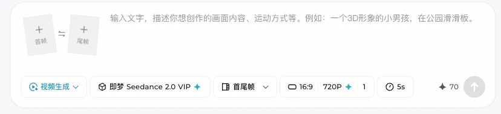
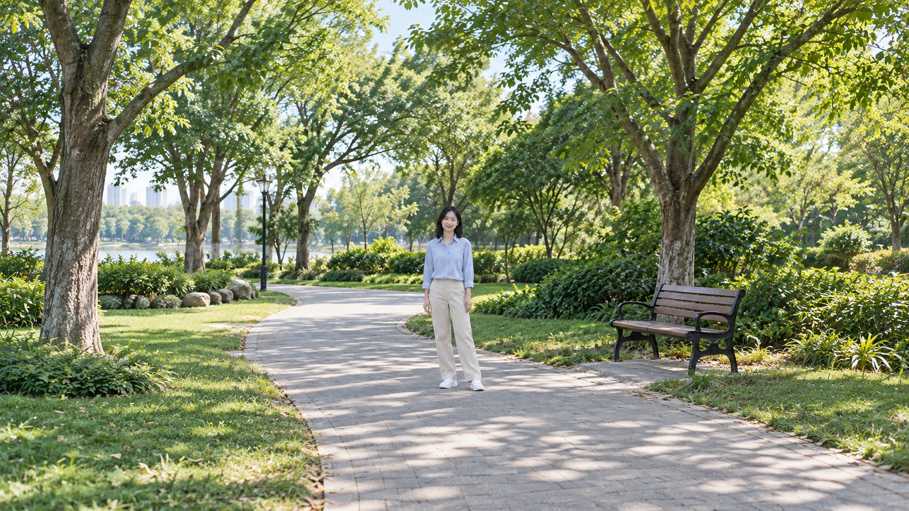
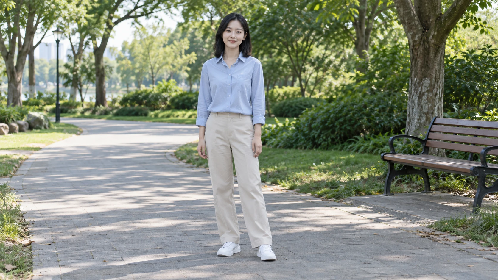
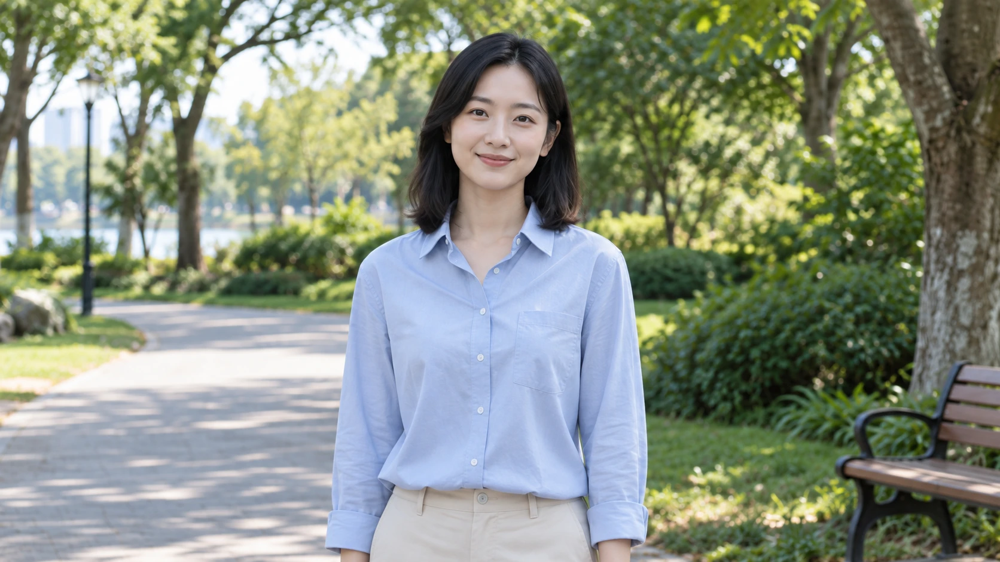
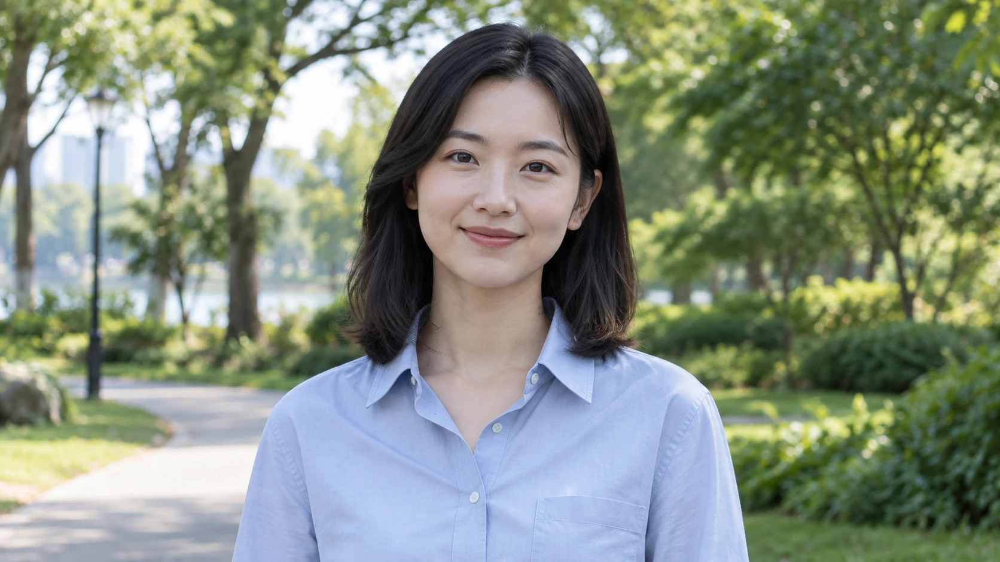
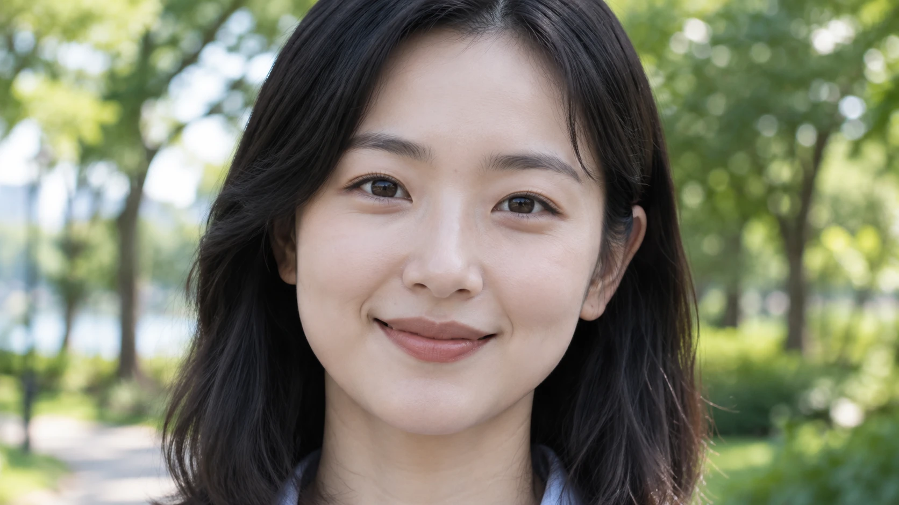

第一部分｜秒懂行业发展
01｜追踪发展
图片做好后，怎样让它按你的想法动起来？这节课先选工具和输入方式，再练动作、景别与运镜。
先沿“参考、生成、修改、开放”四个方向看2026年的变化：哪些能力能帮你减少外观偏差，哪些能继续修改片段，哪些方便接入制作流程？
| 时间 | 代表事件 | 对创作的意义 |
|---|---|---|
| 1 月 13 日 | Veo 3.1 更新参考图生成能力，强化人物与背景的一致性 | 可以提供具体外观，减少反复用文字解释的负担 |
| 2 月 12 日 | Seedance 2.0 发布，支持混合参考与音视频联合生成 | 角色、动作和声音可以放进同一次创作任务 |
| 5 月 19 日 | Gemini Omni 发布，提供自然语言视频编辑 | 已经生成的片段可以继续对话修改 |
| 7～8 月 | MiniMax H3 发布并开放基础模型权重 | 高质量视频生成增加开放选择 |
来源：Veo 3.1 更新、Seedance 2.0 发布、Gemini Omni 发布、MiniMax H3 发布、H3 开放权重。
02｜参考素材
角色长相、动作和声音有明确要求时，给对应参考比只靠文字描述更容易表达清楚。
早期主要靠文字描述
只给文字时，人物、环境、动作和镜头运动都要靠描述。模型会补出具体细节，因此自由发挥的空间较大，适合视觉形象还没定下来的创意探索。
现在图片、视频和音频一起参与
角色、产品或场景长什么样，用图片交代；怎么动、怎么拍，用视频示范；音色和节奏，用音频参考。文字再说明：这次要做什么，每份素材负责哪一项。
把这些不同类型的素材一起作为依据，就叫“多模态参考”。不用一段文字包办所有细节，各种素材可以分工。
来源：Seedance 混合参考能力、Gemini Omni 参考能力。
03｜衡量能力
AI 视频模型的共同迭代方向，是让生成结果更稳定、更可控，更适合实际使用。
看样片别只看清不清晰。换镜头后还是同一个人吗？物品位置对吗？口型和声音合得上吗？下面这些维度，能帮你判断工具是否适合实际任务。
| 迭代方向 | 具体含义 |
|---|---|
| 角色一致 | 切换镜头后，人物长相、服装与主体特征保持一致 |
| 场景连续 | 前后画面的空间关系连贯，物体位置与环境细节保持合理 |
| 镜头运动 | 能理解推、拉、摇、移等镜头语言，生成相应的画面变化 |
| 音画同步 | 对白、口型、音效与画面动作相互对应 |
| 可编辑 | 支持调整局部内容，保留片段中其他已经成立的部分 |
| 可合规 | 产品通过授权机制、内容审核与生成标识等措施，降低版权、肖像等使用风险 |
“可合规”属于产品与使用机制的建设方向，并不意味着生成内容自动获得所有授权。
归纳依据：Seedance 2.0 官方说明、Gemini Omni 官方说明。
04｜选择工具
先看你要做广告、短剧，还是修改已有视频，再对照工具的侧重点。
| 工具 | 一句话定位 | 适用场景 |
|---|---|---|
| Seedance 2.0 | 支持多模态参考、多镜头叙事与原生音频的综合视频生成模型 | 广告、多镜头叙事、IP 短片 |
| MiniMax H3 | 多模态参考与视频生成能力对标主流商业模型，并开放基础模型权重 | 视频改写、品牌物料、可定制工作流 |
| Gemini Omni | 支持自然语言对话式生成与视频修改 | 视频局部修改、多轮调整、风格转换 |
| Kling 3.0 | 侧重人物表演、主体一致性与多镜头音视频生成 | 电商视频、人物对话、短剧 |
| Vidu Q3 | 支持原生音视频生成，侧重完整的短片叙事 | 动漫、漫剧、连续叙事短片 |
| Runway Aleph 2.0 | 通过文字和关键帧调整已有视频内容 | 精细编辑、特效处理、素材二次加工 |
来源：Seedance、MiniMax H3、Gemini Omni、可灵、Vidu、Runway。
第二部分｜速通Seedance
05｜理解能力
Seedance 2.0 是一个听得懂自然语言的 AI 导演助手。
把下面三项能力连起来看，就能理解它怎样把一段需求转成画面、镜头和声音。
拥有世界知识
认识常见事物、生活情境和视觉风格，能把你用自然语言说出的概念转成画面。
具备导演思维
能根据内容安排先拍什么、后拍什么，选择镜头和节奏，让文字变成有先后关系的片段。
支持全能参考
同一次任务里，可以用文字交代需求，再用图片、视频和音频分别补足参考。
06｜参考规格
参考素材准备好后，先核对数量限制，再决定哪些必须带入本次生成。
| 参考类型 | 数量上限 | 主要参考内容 |
|---|---|---|
| 图片 | 9 张 | 人物、产品、场景、构图与风格 |
| 视频 | 3 段 | 动作、运镜、节奏与特效 |
| 音频 | 3 段 | 音色、声音特征与节奏 |
总量限制：图片、视频、音频合计不超过12个。9张图、3段视频、3段音频不能同时传满；先挑最能说明任务的素材。
输出规格：视频时长为 4～15 秒，支持将画面与对白、音效或配乐一起生成。
数量依据：Seedance 2.0 官方说明与即梦平台全能参考界面的混合文件数限制。时长依据：火山引擎 Seedance 2.0 规格。
07｜进入即梦
首尾帧入口
已经有满意的起始画面时，首帧是最直接的生成起点。
打开即梦 AI，进入“视频生成”，在模型选择中选 Seedance 2.0，再选择“首尾帧”。 首帧决定开始画面的依据。只上传首帧时，文字描述接下来发生的变化；同时提供尾帧时，再说明从开始到结束怎样过渡。首尾帧约束两端，并不逐帧规定中间过程。

即梦Seedance2.0首尾帧入口
全能参考入口
角色用哪张图、场景用哪张图、动作参考哪段视频？需要分别交代时，选全能参考。
在同一视频生成区，将“首尾帧”切换为“全能参考”。输入区会出现参考内容上传位置，并支持组合使用图片、视频和音频。
上传后，在提示框输入 @，选中对应素材标签，再写清它用来参考外观、动作还是声音。
提交前检查素材用途、时长和画幅是否符合本次任务，再生成。

即梦Seedance2.0全能参考入口
08｜选择方法
四种生成方法
选哪种方法，取决于这次生成里哪些东西必须守住。
文生视频：展开想象
还没定角色和场景时，先写文字让模型探索画面与动态。具体外观和镜头细节由描述引导，适合尝试创意方向。
图生视频：保持外观
已经有满意的图，就把它作为人物、产品或构图的依据，再用文字说清要怎样动。这样能从已有形象继续做。
视频生视频：迁移动态
已有动作、运镜或节奏可参考时，交入视频并说明要改什么：沿用动作换角色，改变风格，或替换内容。
多模态生成：组合控制
外观、动作和声音都有明确要求时，可以组合文字、图片、视频与音频，在同一次任务里分别指定用途。
这四种方法按主要输入来区分，实际可以组合。任务需要哪种参考就用哪种，不必凑齐所有类型。
适用场景与主要局限
每种输入方式都有它最擅长的那类任务。
| 方法 | 输入 | 适用场景 | 主要局限 |
|---|---|---|---|
| 文生视频 | 文字 | 创意探索、概念片、氛围视频 | 角色外观、产品细节与构图容易变化 |
| 图生视频 | 图片＋文字 | 产品广告、海报动画化、固定角色短片 | 依赖原图质量，运动过程中仍可能变形 |
| 视频生视频 | 视频＋文字，可搭配图片 | 动作迁移、风格重绘、角色或场景替换 | 受参考视频内容限制，并涉及原素材的肖像与版权授权 |
| 多模态生成 | 文字与图片、视频、音频的组合 | 连续叙事短片、广告、AI 短剧、音乐视频 | 素材准备更复杂，不同参考之间可能出现冲突 |
09｜写清提示词
六个写作要素
提示词要让人看得见画面里的变化。
“唯美、震撼、氛围感”只说了偏好，还没告诉模型画面怎么动。先写谁做什么、镜头怎么看、声音是什么，再补风格。
下面六个要素用来查漏。已有参考能说明的，不必重复；与任务无关的，也可以省略。
| 要素 | 应该交代什么 | 常见遗漏 |
|---|---|---|
| 主体 | 谁或什么出现，哪些外观特征重要 | 多个人物没有区分，产品特征不明确 |
| 场景 | 在什么地方、什么时间发生 | 环境与动作不匹配 |
| 动作 | 主体做什么，过程怎样展开 | 只写情绪，没有可见的行为 |
| 镜头 | 拍多大范围，摄影机怎样观察 | 同时要求固定机位和环绕 |
| 风格 | 画风、光线与色调 | 多种互相矛盾的风格堆叠 |
| 声音 | 环境音、对白或音乐的需求 | 忘记写声音，生成后才发现不合适 |
写完检查有没有冲突，例如既要求固定机位又要求环绕。有参考图时，文字重点写动态，别用新外观描述把角色带偏。
来源：Adobe 视频提示词建议。
提示词速查
先用一个明确的小动作，建立可检查、可修改的生成要求。
以下为示例，可直接用于文字生成视频：
生成一段 6 秒、16:9 的治愈系手绘动画。
清晨，一只橘白色小猫趴在木质窗台上，窗外是安静的花园。
小猫缓慢抬起头，看向窗外，最后停住。耳朵轻轻动一下。
固定机位，画面包括小猫完整身体与一小段窗台，全程不切镜头。
柔和的晨光从侧面照入，整体采用暖色调。
声音以窗外轻微鸟鸣为主，无对白、无配乐。
生成后对照六项检查：小猫是否按顺序抬头、看窗外、停住？机位是否固定？声音是否符合要求？哪项不对，再改对应描述。
第三部分｜吃透镜头语言
10｜导演思维
同样的工具，有人做出「AI 素材」，有人做出「电影片段」。
回到小猫案例：抬头是动作，拍到全身还是只拍脸是景别，镜头固定还是靠近是运镜。三者配合，才决定观众看见什么、怎样看。
11｜设计动作
把动作写具体，AI 才知道该让画面怎么动。
| 维度 | 说明 | 常见表现 |
|---|---|---|
| 主体动作 | 人物或物体正在发生的行为与变化 | 低头饮水、抬手挥手、转身离场 |
| 速率 | 动作的快慢与节奏 | 缓慢转身、正常步行、快速奔跑 |
| 幅度 | 动作变化的大小与强弱 | 跳跃等大幅运动，眨眼、发丝摆动等细微动态 |
先让一个镜头讲清一个主要事件。抬头、看窗外、停住可以连成一组动作；把多个不相关事件塞进几秒钟，就容易赶节奏或漏动作。
想把动作看得更细，可以写“慢动作”；想把长时间的变化压缩来看，可以写“延时摄影”。明确时间效果，比只说“动作要流畅”更便于检查节奏。
12｜选择景别
取景范围决定信息重点
观众第一眼看什么，在取景时就定下了。
景别就是画面拍多大范围。先想这个镜头要交代环境、展示动作，还是看清表情，再决定取景范围。
| 景别 | 常用取景范围 | 适合强调什么 |
|---|---|---|
| 远景 | 环境占主要面积，主体很小 | 空间、规模、人物与环境的关系 |
| 全景 | 主体完整出现，保留一定环境 | 全身动作、人物位置与相互关系 |
| 中景 | 人物大致腰部以上 | 手部行为、对话与日常交流 |
| 近景 | 人物大致胸部以上 | 表情变化与人物反应 |
| 特写 | 面部或某个局部占主要面积 | 关键表情、物体纹理、重要细节 |
拍人物可以用身体部位说明范围；拍产品或非人形角色，就直接写要保留哪些部分。景别名后补一句具体构图，更不容易误解。
来源：Adobe 景别与镜头指南。
五种景别图示
五张图摆在一起，取景的差别一眼就能看出来。
下面保持人物和公园不变，只换取景范围。越靠近，你看到的环境越少，人物细节越多。
| 远景 | 全景 | 中景 | 近景 | 特写 |
|---|---|---|---|---|
 |
 |
 |
 |
 |
| 环境占主导，人物较小 | 人物完整身体 | 腰部以上 | 胸部以上 | 面部细节 |
13｜安排运镜
保持距离的观察
不必走近或退开，摄影机留在附近就能拍出变化。
运镜就是摄影机怎样移动或转动。要分清主体在动，还是镜头在动。
| 运镜 | 画面怎么动 | 常用场景 |
|---|---|---|
| 固定 | 摄影机位置与朝向保持不变 | 人物对话、访谈、完整动作展示 |
| 摇 | 摄影机基本保持位置，朝向水平或上下转动 | 房间全貌、建筑高度、人物视线转移 |
| 升降 | 摄影机整体向上或向下移动 | 城市全貌、建筑展示、舞台开场 |
| 环绕 | 摄影机沿主体周围的弧线移动 | 产品展示、人物亮相、空间关系展示 |
想象你站着抬头看楼顶，这是改变朝向，对应上下摇；坐电梯往上看，是高度改变，对应升降。两种画面变化不同。
想展示主体侧面，可以让镜头沿弧线小幅环绕；需要更完整地展示周围，再扩大角度，不必每次转满一圈。
选运镜时先问：这次移动能让观众多看到什么？小幅运动也可以有效，幅度大不代表表达更好。
来源：Adobe 摇镜头说明。
改变距离的观察
想让观众感觉靠近、走远或跟着走，就要让摄影机真的移动。
| 运镜 | 画面怎么动 | 常用场景 |
|---|---|---|
| 推 | 摄影机向主体靠近，主体在画面中逐渐变大 | 人物表情、产品细节、情绪强调 |
| 拉 | 摄影机远离主体，画面逐渐包含更多环境 | 环境揭示、人物关系、场景收尾 |
| 移 | 摄影机横向或沿指定路线移动 | 店内陈列、沿街景物、空间层次展示 |
| 跟 | 摄影机随主体移动，保持相对距离或角度 | 行人步行、运动比赛、人物进出场 |
来源：Adobe 景别与镜头指南。
小结
AI 大幅压低了拍摄、运镜与试片的成本，真正决定成片上限的，是创作者的判断力。
- 行业判断：模型比拼的是控制手段，选工具看它能不能接住你手上的任务。
- Seedance 方法：根据已经确定的内容选择输入方式，把素材用途与生成要求说清楚。
- 导演判断：试着改一版小猫提示词：动作不变，只换景别或运镜，观察信息重点怎样变化。